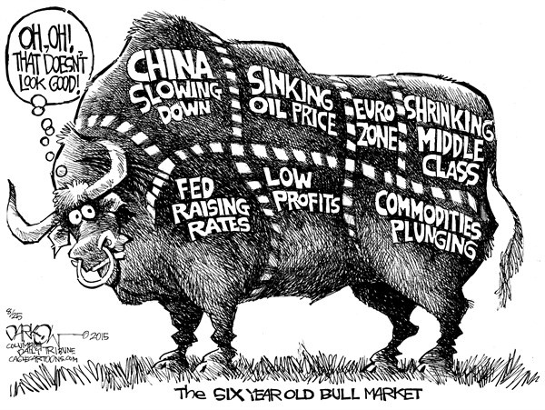

The Dow Jones was officially established in 1896 and it consisted of twelve companies.
- The American Cotton Oil Company
- Distilling & Cattle Feeding Co.
- North American Company
- The American Sugar Refining Company
- General Electric Company
- Tennessee Coal, Iron, and Railroad Company
- American Tobacco Company
- The Laclede Gas Company
- The United States Leather Company (Preferred)
- Chicago Gas Light and Coke Company
- National Lead Company
- United States Rubber Company

https://anticap.wordpress.com/2013/03/29/cartoon-of-the-day-775/